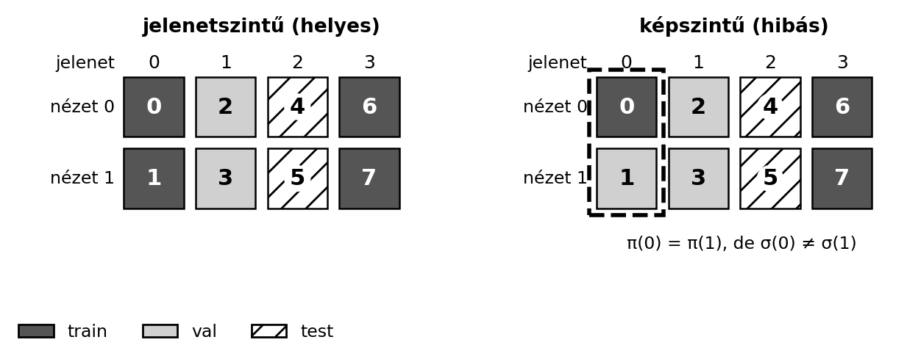

A 11.2. nn.Module és paraméterregisztráció
alfejezetben a modell paramétereit már regisztráltuk, és a
state_dict menthetővé vált. Most azt az adatutat építjük
meg, amely a rögzített train/val/test splitből tanulási batch-eket állít
elő anélkül, hogy a függelék A. A GlyphLab
adatkészlet szakaszában leírt GlyphLab jelenetszintű függetlenségi
szerződését megsértené. Az előismeret a tenzoralakok és a
nn.Module használata; a veszteség- és célalakok szerződését
a 7.3. Bináris, multilabel és regressziós cél
adta.
Induló kérdés: egy Dataset osztály
__getitem__-je visszaad egy képet, egy címkét és egy
maszkot. Ki garantálja, hogy a DataLoader által
összeállított batch-ben nem keveredik a train és a val képe, és hogy egy
jelenet két nézete mindig ugyanabba a splitbe kerül?
A PyTorch torch.utils.data moduljában a
map-style dataset egy indexelt hozzáférést adó
objektum: adott
indexre visszaadja az
-edik
mintát a __getitem__(i) metódus, a __len__
pedig a minták számát. A GlyphLab esetében egy minta nem csak egy kép,
hanem egy négyes:
ahol a kép alakja
és float32, a címke skalár int64, a maszk
és uint8, a scene_id skalár int64
kód: a metadata.csv scene_id oszlopa a
függelék szerint szöveges (G<label>-<scene>
alakú, például G0-0003); a dataset ezt a rendezett egyedi
értékek sorszámára kódolja, az eredeti szöveget a
scene_names tömb őrzi. A batch-elés után az alakok
,
,
és
lesznek.
A sampler az indexek sorozatát adja meg. A
SequentialSampler a
sorrendet, a RandomSampler egy véletlen permutációt állít
elő; a BatchSampler ezt
hosszú csoportokra bontja. A DataLoader a dataset, a
sampler és a collate_fn összekapcsolása ([D08]): a sampler
indexeit bekéri a datasetből, a visszaadott elemek listáját a
collate_fn tenzorrészletekből batchelt tensorokká alakítja.
Az alapértelmezett default_collate a tuple minden
pozíciójára külön-külön stackel, ezért a skalár címkéből
alakú int64 tensor lesz.
A shuffle=True a DataLoader konstruktorban
csak egy rövidítés: a RandomSampler-t kapcsolja be. A
shuffle és a sampler argumentum együtt nem
adható meg, mert mindkettő ugyanazt az indexelési feladatot oldaná meg.
A drop_last=True az utolsó,
-nél
kisebb batch-et eldobja; ez a nagyon kicsi (például egyelemű) utolsó
batch elkerülésére lehet hasznos, mert a batch-normalizáló rétegek
tanítási módban ilyen batch-en instabilak vagy hibát adnak. A GlyphLab
esetében a
,
és
mintás split a labor
batch méretével mind osztható, így ott nincs ilyen maradék.
A worker seed kérdése a párhuzamos betöltéshez
tartozik. Ha a num_workers nagyobb nullánál, minden worker
külön folyamatban fut, és a véletlen mintavétel állapota nem
automatikusan azonos a fő folyamatéval. A [D08]
torch.utils.data dokumentációja szerint a
DataLoader generator paramétere adja a sampler
és a workerek bázisseedjének véletlen forrását, a
worker_init_fn pedig minden workerben a saját seed
beállítására szolgál. A tipikus minta (szemléltetés, nem futtatott
mérés):
import random
import numpy as np
import torch
from torch.utils.data import DataLoader
g = torch.Generator()
g.manual_seed(20261020)
def seed_worker(worker_id):
worker_seed = torch.initial_seed() % 2**32
np.random.seed(worker_seed)
random.seed(worker_seed)
# ds: a fent definiált GlyphLabDataset példány
loader = DataLoader(ds, batch_size=4, shuffle=True,
num_workers=2, generator=g,
worker_init_fn=seed_worker)A generator és a worker_init_fn együtt
biztosítja, hogy a keverés és a workerek saját véletlen állapota is
reprodukálható legyen; a részletes viselkedés a dokumentált verzióhoz
kötött. A jelen egység laborja num_workers=0 értékkel fut,
így az indexelés a fő folyamatban marad, és a seed kérdése nem
befolyásolja az eredményt.
A transform boundary azt a határt jelöli, ahol a
kép- és címketranszformáció megtörténik. A véletlen train-augmentáció a
train Dataset __getitem__-jében alkalmazandó,
mert ott a transzformáció mintánként, a betöltés pillanatában fut. A val
és test dataset csak determinisztikus transzformációt kaphat; a
geometriai augmentációnak a maszkot is együtt kell transzformálnia,
különben a pixelcímke és a bemenet elcsúszik. A GlyphLab diagonal
osztálya csak egy ferde irányt tartalmaz, ezért a tükrözés és a 90 fokos
forgatás nem címkemegőrző; ebben az egységben a labor semmilyen
augmentációt nem alkalmaz, csak a betöltési szerződést ellenőrzi.
A GlyphLab három orientációs osztálya a függelék A. A GlyphLab adatkészlet szerint 0 =
vertical (függőleges), 1 = horizontal
(vízszintes), 2 = diagonal (ferde). A záró kiértékelés
clean–korrupt párja ugyanazt a 60 tesztképet használja: a
corrupted_test.npy a metadata.csv
test-sorrendjében ugyanazokat a jelenet–nézet párokat tartalmazza zajos,
fényességi gradienssel torzított változatban, ezért a tiszta és a
korrupt feltétel képenként párosítható.
A GlyphLab adatszerződésének központi állítása, hogy a megfigyelési
egység a scene_id, nem az egyes kép. Ezt formálisan a
következő invariáns írja le.
Állítás (jelenet–split invariáns). Legyen
a képek indexhalmaza,
a scene_id hozzárendelés, és
a split hozzárendelés. A GlyphLab generátor olyan
függvényt valósít meg, amelyre minden
esetén
Ebből következik, hogy minden
-re
Levezetés. Ha
,
akkor
tehát az azonos jelenethez tartozó
képek splitje megegyezik. A
függvény létezése a generátor jelenetszintű splitjének formális alakja:
a splitet először a 180 jelenetre sorsoljuk, majd minden jelenet minden
nézetét ehhez a splithez rendeljük. Ezt a tulajdonságot a generátor
adatszerződésére tett feltevésnek tekintjük, nem a generátor kódjából
levezetett tételnek; a levezetés csak azt mutatja meg, hogy a
feltevésből következik a képpárok split-egyezése. A
DataLoader ezt az invariánst nem ronthatja el, mert a
sampler csak indexeket permutál, és a három loader külön indexhalmazt
kap a split szűrés után. Az invariáns ellenőrzése tehát két
részből áll: a metadata.csv jelenetszintű
konzisztenciájából és abból, hogy a dataset konstruktora a
split oszlop alapján szűr, nem keveri a sorokat. A labor a
feltevést csak a következményén keresztül ellenőrzi: a
metadata.csv jelenetszintű konzisztenciáját vizsgálja, a
generátor forráskódját nem.
Négy jelenet, jelenetenként két nézet, összesen nyolc kép. A helyes split-hozzárendelés:
| scene_id | nézet | split | |
|---|---|---|---|
| 0 | 0 | 0 | train |
| 1 | 0 | 1 | train |
| 2 | 1 | 0 | val |
| 3 | 1 | 1 | val |
| 4 | 2 | 0 | test |
| 5 | 2 | 1 | test |
| 6 | 3 | 0 | train |
| 7 | 3 | 1 | train |
Itt , , . Ha a 0. képet train-be, az 1. képet val-ba tennénk, akkor teljesülne, de , tehát az invariáns sérülne; ekkor a val lossba a train képekkel azonos jelenetből származó, azoktól nem független nézetek is bekerülnének, és ez a val metrikát optimistán torzítaná.

Előfeltétel. Python 3.12 és a cnn-labor
csomag rögzített környezete (uv sync: NumPy 2.3.5, PyTorch
2.14.1+cpu; a közölt kimenetek a könyv ellenőrző környezetéből, NumPy
2.5.4 és PyTorch 2.15.0+cpu alatt készültek), CPU; a labor a szakasz
kódját használja, a szükséges csomagokat a laborcsomag rögzített
környezete biztosítja. Bemenet a GlyphLab lab/data/
könyvtárának images.npy, labels.npy,
masks.npy és metadata.csv fájlja; a
n043_dataset.py és n043_check.py a
lab/ könyvtárba kerül, futtatás:
python n043_check.py.
Munkakönyvtár: lab/. Az adatfájlok a data/
alkönyvtárban vannak: images.npy, labels.npy,
masks.npy, metadata.csv; az útvonalakat a
szkript a saját helyéhez képest oldja fel, ezért a lab/
könyvtárból futtatva is ugyanazokat a fájlokat találja. A labor csak
CPU-t és NumPy/PyTorch alapműveleteket használ; seedre a betöltés miatt
nincs szükség, mert a betöltés determinisztikus. A kód
str | Path és str | None uniótípus-jelölést
használ, amely Python 3.10-től érhető el; a labor Python 3.12.3 alatt
fut.
# lab/n043_dataset.py
import csv
from pathlib import Path
import numpy as np
import torch
from torch.utils.data import Dataset
DATA_DIR = Path(__file__).resolve().parent / "data"
class GlyphLabDataset(Dataset):
"""GlyphLab: kép, label, mask és scene_id együtt, split szerint szűrve.
transform: opcionális függvény, amely a (2,24,24) alakú, egymásra rakott
[kép, maszk] tensort kapja és ugyanilyet ad vissza; így egy geometriai
transzformáció a képet és a maszkot együtt, ugyanúgy alakítja át."""
def __init__(self, root: str | Path = DATA_DIR, split: str | None = None,
transform=None):
self.root = Path(root)
self.transform = transform
images = np.load(self.root / "images.npy") # (360,1,24,24) float32
labels = np.load(self.root / "labels.npy") # (360,) int64
masks = np.load(self.root / "masks.npy") # (360,1,24,24) uint8
self.images = images
self.labels = labels
self.masks = masks
with open(self.root / "metadata.csv", newline="", encoding="utf-8") as f:
rows = list(csv.reader(f))
header = rows[0]
expected = ["index", "scene_id", "view_id", "label", "split",
"xmin", "ymin", "xmax", "ymax"]
if header != expected:
raise ValueError("metadata fejléc nem egyezik")
recs = rows[1:]
if not (len(images) == len(labels) == len(masks) == len(recs)):
raise ValueError("eltérő hosszúságú adattömb és metadata")
idx = np.array([int(r[0]) for r in recs], dtype=np.int64)
if not np.array_equal(idx, np.arange(len(images))):
raise ValueError("a metadata indexe nem egyezik a tömb indexével")
# a scene_id szöveg (pl. "G0-0003"); int64 kódot a rendezett egyedi értékek adnak
self.scene_names = np.array([r[1] for r in recs], dtype=object)
_, codes = np.unique(self.scene_names.astype(str), return_inverse=True)
self.scene_ids = codes.astype(np.int64)
self.splits = np.array([r[4] for r in recs], dtype=object)
if split is not None:
keep = self.splits == split
self.images = self.images[keep]
self.labels = self.labels[keep]
self.masks = self.masks[keep]
self.scene_ids = self.scene_ids[keep]
self.scene_names = self.scene_names[keep]
self.splits = self.splits[keep]
def __len__(self):
return len(self.images)
def __getitem__(self, i):
img = torch.from_numpy(self.images[i])
lab = torch.tensor(self.labels[i], dtype=torch.int64)
msk = torch.from_numpy(self.masks[i])
sid = torch.tensor(self.scene_ids[i], dtype=torch.int64)
if self.transform is not None:
joint = self.transform(torch.cat([img, msk.to(img.dtype)], dim=0)) # (2,24,24)
img, msk = joint[:1].contiguous(), joint[1:].round().to(torch.uint8)
return img, lab, msk, sidAz ellenőrző szkript a split-invariánst is teszteli. A
scene_id kódolása a teljes metadata.csv-n, a
split szerinti szűrés előtt történik, ezért a kódok splitfüggetlenek:
ugyanaz a jelenet ugyanazt a scene_id kódot kapja a train,
a val és a test datasetben.
# lab/n043_check.py
import csv
from collections import defaultdict
import numpy as np
from torch.utils.data import DataLoader
from n043_dataset import DATA_DIR, GlyphLabDataset
if __name__ == "__main__":
ds_train = GlyphLabDataset(DATA_DIR, split="train")
ds_val = GlyphLabDataset(DATA_DIR, split="val")
ds_test = GlyphLabDataset(DATA_DIR, split="test")
print("hossz:", len(ds_train), len(ds_val), len(ds_test))
assert (len(ds_train), len(ds_val), len(ds_test)) == (240, 60, 60)
img, lab, msk, sid = ds_train[0]
print("elem:", img.shape, img.dtype, lab.shape, lab.dtype,
msk.shape, msk.dtype, sid.shape, sid.dtype)
print("tartomány:", float(img.min()), float(img.max()),
int(msk.min()), int(msk.max()))
lo = min(float(ds.images.min()) for ds in (ds_train, ds_val, ds_test))
hi = max(float(ds.images.max()) for ds in (ds_train, ds_val, ds_test))
print("teljes pixel tartomány:", lo, hi)
assert lo >= 0.0 and hi <= 1.0
assert all(set(np.unique(ds.masks)) <= {0, 1}
for ds in (ds_train, ds_val, ds_test))
loader = DataLoader(ds_train, batch_size=4, shuffle=False)
batch = next(iter(loader))
for name, x in zip(["image", "label", "mask", "scene_id"], batch):
print(name, tuple(x.shape), x.dtype)
assert [tuple(x.shape) for x in batch] == [(4, 1, 24, 24), (4,),
(4, 1, 24, 24), (4,)]
scene_split = {}
with open(DATA_DIR / "metadata.csv", newline="", encoding="utf-8") as f:
for r in list(csv.reader(f))[1:]:
s, sp = r[1], r[4] # scene_id szövegként
if s in scene_split and scene_split[s] != sp:
raise SystemExit("INVARIANTS SÉRÜL")
scene_split[s] = sp
print("egyedi scene:", len(scene_split))
assert len(scene_split) == 180
splits = defaultdict(int)
for s in scene_split.values():
splits[s] += 1
print("scene per split:", dict(splits))
assert dict(splits) == {"train": 120, "val": 30, "test": 30}A futtatási parancs a lab/ munkakönyvtárból:
python n043_check.pyFuttatott kimenet (Python 3.12.3, NumPy 2.5.4, PyTorch 2.15.0+cpu, CPU, 1 szál; a betöltés determinisztikus, két futás kimenete bitazonos):
hossz: 240 60 60
elem: torch.Size([1, 24, 24]) torch.float32 torch.Size([]) torch.int64 torch.Size([1, 24, 24]) torch.uint8 torch.Size([]) torch.int64
tartomány: 0.0 0.9264628887176514 0 1
teljes pixel tartomány: 0.0 1.0
image (4, 1, 24, 24) torch.float32
label (4,) torch.int64
mask (4, 1, 24, 24) torch.uint8
scene_id (4,) torch.int64
egyedi scene: 180
scene per split: {'train': 120, 'val': 30, 'test': 30}Ez egyezik a szerződéssel: a hosszak ; az elem alakjai float32, int64, uint8 és int64; a batch alakjai , , , ; a teljes train/val/test pixelállomány a intervallumban van, a maszkértékek -ben; az egyedi jelenetek száma , és a jelenetek splitenkénti száma .
F1 (fogalmi, nehézség 1). Magyarázza el a
Dataset és a DataLoader különbségét. Miért nem
elegendő önmagában egy Dataset a minibatch-tanításhoz?
Adjon egy kis ellenpéldát, ahol a Dataset indexelése
működik, de a batchelt iteráció hibát adna.
F2 (levezetési, nehézség 2). Hat képhez adott a következő jelenethozzárendelés: , , , és a nézetindexek rendre . Adjon egy olyan split-hozzárendelést, amely teljesíti a jelenet–split invariánst, és egy olyat, amely sérti. Indokolja mindkettőt a függvény segítségével.
F3 (implementációs, nehézség 2). Írja meg a
GlyphLabDataset osztályt a fenti szerződés szerint, majd
ellenőrizze: a train dataset hossza
;
a ds_train[0] elemeinek alakja és dtype-ja
pontosan
torch.float32,
torch.int64,
torch.uint8,
torch.int64; a
DataLoader(ds_train, batch_size=4, shuffle=False) első
batch-ének alakjai
,
,
,
.
A dtype-okra és az alakokra is szigorú egyezést várunk: itt nem
numerikus értéket hasonlítunk, ezért nincs értelmezhető tolerancia,
hanem a tenzor metaadata egyezik vagy nem.
F4 (hibakeresési, nehézség 2). A következő kódrészlet a val loaderhez véletlen tükrözést ad:
def random_hflip(x, p=0.5):
# véletlen vízszintes tükrözés a (2,24,24) [kép, maszk] tensoron
return torch.flip(x, dims=(-1,)) if torch.rand(()) < p else x
val_ds = GlyphLabDataset(DATA_DIR, split="val", transform=random_hflip)
val_loader = DataLoader(val_ds, batch_size=4, shuffle=False)Azonosítsa a hibát, írja le a következményét a validation loss-ra és a korrupt teszt páros összevetésére, és adja meg a javítást. Hogyan ellenőrizné vissza, hogy a javítás után a val loader determinisztikus?
F5 (kísérleti/transzfer, nehézség 3). Tervezzen egy olyan kísérletet, amely a meglévő GlyphLab splittől független, új jelenetszintű train/val/test splitet készít 70/15/15 arányban, majd a tanítás után a test accuracy-t méri. Adja meg a protokollt: megfigyelési egység, baseline, változó tényező, metrika, erőforrás és a következtetés érvényességi korlátja. Nem szükséges futtatni; a terv legyen végrehajtható. A beadandó terv kötelező elemei: hipotézis, a változó tényező, kontroll (baseline), metrika és megfigyelési egység, a seedek száma és konkrét értékei, számszerű döntési szabály, valamint erőforráskeret.
F1. A Dataset egy indexelt
adathozzáférés: az
indexre mintát ad, de nem tud batch méretet, sorrendet vagy párhuzamos
betöltést kezelni. A DataLoader a sampler által adott
indexsorozatot bekéri, a mintákat a collate_fn segítségével
batchelt tensorokká alakítja, és opcionálisan több workerrel dolgozik.
Ellenpélda: ha a Dataset.__getitem__ különböző hosszúságú
szekvenciákat ad vissza, az indexelés működik, de az alapértelmezett
default_collate nem tudja stackelni a különböző hosszúságú
tenzorokat, ezért a DataLoader iterációja hibát ad;
ilyenkor egyedi collate_fn vagy padding szükséges.
import torch
from torch.utils.data import Dataset, DataLoader
class VariableLength(Dataset):
def __len__(self):
return 3
def __getitem__(self, i):
return torch.arange(i + 1) # 1, 2, 3 hosszú vektor
ds = VariableLength()
print(ds[0].shape, ds[1].shape, ds[2].shape)
# torch.Size([1]) torch.Size([2]) torch.Size([3])
list(DataLoader(ds, batch_size=2))
# RuntimeError: stack expects each tensor to be equal size,
# but got [1] at entry 0 and [2] at entry 1A futtatott kimenet (a kivétel üzenete rövidítve, a traceback nélkül):
torch.Size([1]) torch.Size([2]) torch.Size([3])
RuntimeError: stack expects each tensor to be equal size, but got [1] at entry 0 and [2] at entry 1F2. A helyes függvény például , , . Ekkor a split-hozzárendelés: train; val; test. Az invariáns teljesül, mert azonos jelenethez tartozó indexek azonos splitet kapnak. Sértő példa: és , miközben . Itt nem létezhet olyan , amelyre minden -re, mert egyszerre train és val lenne; ezért a levezetett invariáns sérül.
F3. A megoldás a fenti n043_dataset.py
és n043_check.py. Az ellenőrzés kulcsa, hogy a
torch.from_numpy megőrzi a NumPy dtype-ot:
float32
torch.float32, uint8
torch.uint8. A címke és a scene_id explicit
torch.tensor(..., dtype=torch.int64) módon int64 lesz, így
a default_collate stackelés után is int64 marad. A shape-ek
pontos egyezése azt jelenti, hogy nincs engedmény:
nem lehet
;
mivel itt nem numerikus értéket hasonlítunk, tolerancia helyett típus-
és alakegyezést követelünk. A futtatási parancs
python n043_check.py a lab/ könyvtárból.
F4. A hiba: a val dataset transzformációja véletlen
augmentáció, ami a transform boundary megsértése. A
random_hflip
valószínűséggel tükrözi a képet (a __getitem__ a
transform-ot ténylegesen meghívja, a maszkkal együtt); a
GlyphLab diagonal osztálya csak egy ferde irányt tartalmaz, ezért a
tükrözés a címke geometriai jelentését megváltoztatja: a ferde vonal
iránya az ellenkezőjére fordul, miközben a vertical és horizontal
osztály jelentése nem cserélődik fel. Következmény: a val loss nem
determinisztikus, a best checkpoint kiválasztása zajos; a clean és
corrupt teszt páros összevetése is torzul, mert ugyanazon tesztkép
tiszta és korrupt változata két külön __getitem__-hívásban
egymástól függetlenül kap tükrözést, így a képenkénti pár egyik tagja
tükrözött, a másik nem. Javítás: a val dataset ne kapjon véletlen
transzformációt (transform=None); csak determinisztikus
normalizálást, vagy semmit. Visszaellenőrzés ismételt
__getitem__-hívásokkal és két teljes iterációval:
torch.manual_seed(0)
bad = GlyphLabDataset(DATA_DIR, split="val", transform=random_hflip)
print(any(not torch.equal(bad[0][0], bad[0][0]) for _ in range(20))) # True: véletlen
good = GlyphLabDataset(DATA_DIR, split="val") # javítva
print(all(torch.equal(good[0][0], good[0][0]) for _ in range(20))) # True: determinisztikus
a = torch.cat([b[0] for b in DataLoader(good, batch_size=4)])
c = torch.cat([b[0] for b in DataLoader(good, batch_size=4)])
print(torch.equal(a, c)) # TrueF5. A megfigyelési egység a scene_id,
nem a kép: a 180 jelenet osztályonként 60-60-60, és minden jelenet
mindkét nézete együtt kerül a splitjébe. A rétegzés szempontja a
label osztálya; osztályonként 70/15/15 arányban 42 train, 9
val és 9 test jelenetet sorsolunk, ami összesen
train,
val és
test jelenetet ad (a képek száma ezek kétszerese: 252/54/54). A baseline
ugyanaz a modell és tanítási recept a gyárilag rögzített 120/30/30-as
jelenet–splitten; a változó tényező csak a split sorsolása. A modell egy
rejtett rétegű MLP a 10.2. Affin réteg és aktiváció
backward szerint: a
képet 576-dimenziós vektorrá lapítjuk, 16 tanh rejtett egység
következik, a kimenet 3 logit; a veszteség a 7.2.
Softmax és többosztályos cross-entropy szerinti softmax
cross-entropy, az optimizer SGD rögzített tanulási rátával, a batch
mérete 16, a legjobb checkpointot a val loss választja. A metrika a test
accuracy jelenet szintű bootstrap konfidenciaintervallummal; az
erőforrás CPU. Az érvényességi korlát: a 70/15/15 sorsolás tesztje nem
azonos a gyári teszt halmazával, ezért a két pontosság különbsége nem
páros összehasonlítás, és önmagában nem bizonyítja egyik split fölényét;
a split-variabilitást öt seedelt ismétléssel kell becsülni, az eredmény
pedig a 180 jelenetes szintetikus GlyphLab-adatra érvényes, nem
természetes képi benchmarkra.
Kötelező elemek kiegészítve. Hipotézis: az új, 70/15/15-ös
jelenetszintű split a gyári 120/30/30-as splithez képest nem változtatja
meg érdemben a tesztpontosságot. Seedek: 20261020, 20261021, 20261022.
Döntési szabály: különbséget csak akkor állítunk, ha a
tesztpontosság-különbség 95%-os, jelenetszintű bootstrap-intervalluma
nem tartalmazza a 0-t. Erőforrás: CPU, float32, futásonként
néhány perc.
A leggyakoribb hiba a validation/test loaderen alkalmazott
véletlen train-augmentáció. Ha a val vagy test dataset
__getitem__-je véletlen tükrözést, forgatást vagy kivágást
kap, akkor az értékelés nem a modell képességét, hanem egy véletlen
transzformációval zajosított bemenetet mér. A páros korrupt teszt
összevetése különösen érzékeny: a clean és corrupt kép ugyanazon jelenet
és nézet párja, ezért a geometriai transzformációnak is azonosnak kell
lennie; a véletlen augmentáció ezt a párosítást felbontja, és a
clean–corrupt különbséghez mesterséges varianciát ad. A transform
boundary tehát split-függő szerződés: véletlen transzformáció csak a
train datasetben, a val/test datasetben kizárólag determinisztikus
előfeldolgozás.
Ellenőrizze, hogy a dataset konstruktora a split oszlop
alapján szűr, és a metadata.csv fejlécét, valamint az
indexsorrendet is validálja. A DataLoader batch alakjait a
default_collate szabálya szerint vezesse le: a tuple első
eleme
,
a stackelés után
;
a skalár címkéből
lesz. A 11.2. nn.Module és paraméterregisztráció
alfejezetben bevezetett state_dict most az adatbetöltővel
együtt lesz használható a tanítási lépésben. A
CrossEntropyLoss nyers logitokat vár
alakban, a cél pedig
alakú int64 osztályindex, nem one-hot vektor; ezért a batch
label mezője
int64 marad, és a modell kimenetére a veszteség előtt nem teszünk
softmaxot. A 7.3. Bináris, multilabel és regressziós
cél alfejezetben rögzített int64 célalak és logits-bemenet
szerződése így a 11.4. Egy teljes PyTorch tanítási
iteráció alfejezetben találkozik a betöltött batch-ekkel.
Az induló kérdésre a válasz. A split a
scene_id szerint dől el, ezért a train és a val képei nem
keveredhetnek, és egy jelenet két nézete mindig ugyanabba a splitbe
kerül; a GlyphLab szerződése szerint ez 120/30/30 jelenet, azaz
240/60/60 kép.
A Dataset indexelt mintahozzáférést ad, a
DataLoader a sampler indexsorozatát batchelt tensorokká
alakítja a collate_fn segítségével. A GlyphLab
jelenet–split invariánsa formálisan azt mondja ki, hogy azonos
scene_id-hez tartozó képek splitje megegyezik; a
függvény létezése biztosítja, hogy a split jelenetszinten, nem képenként
dől el. A labor betölti a train/val/test dataseteket, ellenőrzi a
hosszakat, a dtype-okat és az alakokat, valamint a metadata
jelenetkonzisztenciáját. A transform boundary szerint véletlen
augmentáció csak a train datasetben megengedett; a val/test loader
determinisztikus transzformációt kaphat. A következő 11.4. Egy teljes PyTorch tanítási iteráció
egységben ezt a betöltőt kapcsoljuk össze a tanítási iterációval és a
loss-számítással.